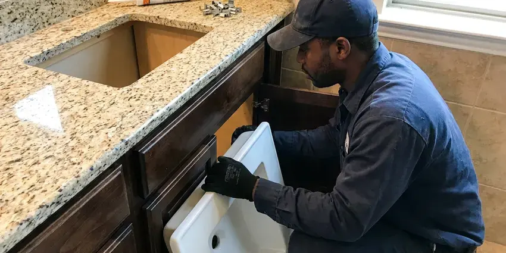

Bathroom Plumbing in Lakewood, CA
When your bathroom plumbing acts up in Lakewood, CA, you need quick, reliable help. FKM Plumbing provides complete services to keep your system running smoothly.
- Fair Pricing
- Fair Pricing
- Guaranteed Work
- Toilets, Faucets and Showers

Fix Leaks, Clogs and Worn Fixtures in Your Bathroom in Lakewood, CA.
We're ready to handle any bathroom plumbing challenge for your comfort and convenience.
Your Go-To for Bathroom Plumbing in Lakewood, CA
At FKM Plumbing, we understand the importance of a fully working bathroom in your Lakewood, CA home. Our comprehensive bathroom plumbing services keep every faucet, drain, and fixture operating efficiently and reliably.
Our expertise includes:
- Sink and drain solutions
- Faucet and shower fixture services
- Toilet repair, installation, and replacement

Additional Bathroom Plumbing Services in Lakewood, CA
From toilets to showers, our bathroom plumbing team in Lakewood, CA handles repairs, installs, and upgrades with tidy, code-compliant work.


Customers
Why Choose FKM Plumbing for Bathroom Plumbing in Lakewood, CA?
Our plumbers carry common parts for the most popular fixture brands. That means quicker repairs and fewer return trips.
- Lasting Repairs, We use high-quality parts and proven methods so our repairs stand the test of time.
- Certified Pros, Our plumbers are licensed, insured, and continuously trained on the latest plumbing techniques and codes.
- Brand Knowledge, We service and install Moen, Delta, Kohler, American Standard, TOTO and more.
Citywide Coverage
No matter where you are located in Lakewood, CA, our professional plumbers can reach you quickly. We are dedicated to giving all residents access to quality bathroom plumbing solutions.
Experienced Team
Our plumbers have repaired and installed thousands of toilets, faucets and showers. They know the quirks of each major brand and how to source parts fast.
Safety-First Approach
Safety comes first in all our bathroom plumbing work. We follow all Southern California plumbing codes and safety regulations, protecting your home and family during every service.
Trusted Certified Lakewood Plumbing Services Professionals
At FKM Plumbing, we take pride in providing licensed, certified plumbing services throughout Lakewood, CA. Backed by recognized industry credentials, our experienced plumbers combine technical skill with genuine customer care. Whether it is repair, installation, or maintenance, we follow strict safety and quality standards to deliver lasting results you can trust.
Call Us Now PHCC Plumbing Contractor Recognition
PHCC Plumbing Contractor Recognition Better Business Bureau (BBB) Accreditation
Better Business Bureau (BBB) Accreditation Angi Certified Pro
Angi Certified Pro ISO 9001 Quality Management Certification
ISO 9001 Quality Management CertificationDependable Bathroom Plumbing Services in Lakewood, CA
Toilet Repair and Installation in Lakewood
A running toilet can waste hundreds of gallons of water per month, driving up your utility bills. FKM Plumbing provides skilled toilet repair for common issues like faulty flappers, fill valves, and leaks at the base. We also handle new toilet installations, whether you are upgrading to a high-efficiency model or replacing an old, inefficient unit. Our team ensures proper sealing and stable mounting for long-lasting performance in Lakewood homes.

Faucet Repair and Replacement in Lakewood, CA
Dripping faucets are more than just annoying, since they can lead to real water waste and contribute to mildew growth. Our plumbers specialize in repairing all types of bathroom faucets, including compression, cartridge, ceramic disc, and ball faucets. If a repair is not cost-effective, we offer professional faucet replacement, helping you choose and install a new fixture that fits your bathroom style and budget in Lakewood, CA. We work with brands like Moen, Delta, and Kohler.
Bathtub Faucet Replacement in Lakewood, CA
Over time, bathtub faucets can wear out, leak, or become outdated. FKM Plumbing offers expert bathtub faucet replacement to upgrade your bathroom's look and function. We can install various styles, from single-handle to wall-mounted designs, with a watertight seal and proper operation. Our plumbers in Lakewood, CA know how local water conditions can speed up faucet wear, and we recommend durable replacements.
Shower & Bathtub Plumbing in Lakewood
From low water pressure to drainage issues, shower and bathtub plumbing problems require prompt attention. FKM Plumbing provides comprehensive shower repair, including fixing diverters, clogged drains, and leaky showerheads. We also specialize in shower installation and bathtub faucet replacement, upgrading your bathroom while making sure all connections are secure and code-compliant in Lakewood.
Faucet Repair & Replacement in Lakewood, CA
Dripping faucets can be a nagging headache and lead to higher water bills. Our plumbers are experts in diagnosing and repairing all types of bathroom faucets, from cartridge replacements to O-ring fixes. If a repair isn't cost-effective, we offer a wide selection of durable faucet replacements and handle the installation for leak-free operation in your Lakewood, CA bathroom.
Sink Repair & Drain Service in Lakewood, CA
A clogged or leaking sink can bring your bathroom to a halt. Our team handles all aspects of sink repair, from mending cracks to fixing problem P-traps. We also offer efficient sink drain service, clearing stubborn clogs caused by hair and soap scum. With the right tools, we restore proper drainage and prevent further issues in your Lakewood, CA bathroom.
Toilet Repair in Lakewood
A running or leaking toilet can waste hundreds of gallons a day. We replace worn flappers, fill valves and flush valves, and we fix loose or rocking toilets by repairing the flange and installing a new wax ring. Chlorine in treated water breaks down rubber parts, so flapper replacement is a common repair. We also repair cracked tank bolts and leaking supply lines.

Urinal Installation and Commercial Bathroom Plumbing in Lakewood
Beyond residential services, FKM Plumbing also provides commercial bathroom plumbing solutions for businesses in Lakewood. This includes the installation of urinals with proper water supply and drainage connections according to commercial plumbing codes. We know the demands of high-traffic commercial restrooms and provide durable, code-compliant installations and repairs to limit downtime for your business.
Bathroom Plumbing Near Me in Lakewood, CA
We are deeply familiar with the plumbing and common issues found in homes across Lakewood. This local knowledge allows us to provide targeted and efficient bathroom plumbing solutions suited to your specific needs.
We know the fixtures, water conditions and home styles common in this area. That helps us recommend the best repair or replacement for your bathroom. Give us a call to schedule service.
FKM Plumbing at a Glance
- Licensed and insured plumbers serving Lakewood, CA
- 24/7 emergency service with same-day scheduling
- Upfront, flat-rate pricing before work begins
- 4.8-star rated by 754+ Southern California customers
Lakewood Map
Lakewood Information
- Population
- 78,135
- Area codes
- 562/714/310
- Service area
- Lakewood and communities within 40 miles
- Nearby
- Bellflower, Norwalk, Long Beach, Downey
Effective bathroom plumbing is important for homes in Lakewood, CA, since mineral deposits can wear out fixtures and busy bathrooms need robust drainage to handle daily use. Around Lakewood, flushing the water heater yearly and cleaning aerators keeps mineral buildup from cutting flow and efficiency.
Expert Services
Trust our professionals for reliable FKM Plumbing solutions in Lakewood, CA.
Our Specialized Plumbing Services in Lakewood, CA
At FKM Plumbing, we provide a complete range of plumbing services across Lakewood, CA. From leak detection to full system installations, our team ensures fast, precise, and affordable service for both residential and commercial properties. Explore our core services below:


How Our Bathroom Plumbing Process Works in Lakewood, CA
At FKM Plumbing, we make getting your bathroom plumbing fixed or installed in Lakewood, CA simple and stress-free.
Request a Quote
Call (213) 871-0701 and tell us which fixture needs attention and what you are noticing. We schedule a plumber at a time that works for you.
Inspect and Recommend
We inspect the fixture and plumbing and explain repair and replacement options. You get a clear price before work starts.
Repair or Install
We complete the work with quality parts and test for leaks and proper operation. We clean up and haul away old fixtures.
Frequently Asked Questions About Bathroom Plumbing in Lakewood
The cost of bathroom plumbing in Lakewood, CA varies widely depending on the specific service. A minor faucet repair might be $150 to $300, while a toilet replacement could range from $300 to $600, not including the new toilet. Complex issues like rerouting pipes or installing new shower systems can run $1,000 or more. We provide transparent, upfront pricing after assessing the job.
Regular maintenance is key. Avoid flushing anything but toilet paper, use drain strainers to catch hair in sinks and showers, and fix minor leaks promptly. Consider a water softener if you have hard water, to reduce mineral buildup in fixtures and pipes.
A standard bathroom faucet installation typically takes 1 to 3 hours, assuming no complications. Factors like existing plumbing condition, fixture type, and accessibility can affect the total time. Our plumbers work efficiently to limit disruption.
The lifespan of bathroom plumbing fixtures varies, with toilets lasting 20 to 50 years, faucets 15 to 20 years, and shower valves 20 to 30 years. However, factors like water quality, frequency of use, and maintenance can affect these timelines. Around Lakewood, flushing the water heater yearly and cleaning aerators keeps mineral buildup from cutting flow and efficiency. Harder water can sometimes lead to earlier wear on internal components.
Yes. Our workmanship is warrantied in writing, and fixtures carry manufacturer warranties. We explain coverage before starting.
Common signs include a running toilet, weak flush, water pooling around the base, or a gurgling sound from other drains when flushed. These often indicate issues with the fill valve, flapper, or a partial clog in the drain line.
For most Lakewood homes, an annual or twice-yearly professional drain cleaning is sufficient to prevent major clogs, especially if you have long hair or use a lot of soap. Around Lakewood, flushing the water heater yearly and cleaning aerators keeps scale buildup from cutting flow and efficiency. Mineral buildup can also narrow pipes over time.
Yes, FKM Plumbing stands behind our work. We offer a warranty on all parts and labor for our bathroom plumbing services. Specific warranty details will be provided at the time of service for your peace of mind.
What People Are Saying About Our Plumbing Experts?

Laura S.
I scheduled a water heater replacement, and the team made the process smooth and affordable. The new unit works perfectly, and they cleaned up after completing the job.
Water Heater Replacement · Bellflower, CA
Patricia H.
We had a slab leak that two other companies could not find. FKM Plumbing located it in under an hour, explained our options, and the price matched the quote to the dollar.
Slab Leak Repair · Lakewood, CA
James P.
Our commercial plumbing system had a leak under the sink, and FKM Plumbing handled it professionally. The plumbers arrived quickly and restored everything without disruption to our customers.
Commercial Plumbing · Lakewood, CA
Emily R.
I called FKM Plumbing for plumbing repair, and the technician was fast, polite, and thorough. They explained the problem clearly and fixed it the same day. I will definitely hire them again. Highly recommended!
Plumbing Repair · Buena Park, CASofia M.
Two new toilets installed in one visit, no mess left behind, and the tech even adjusted a faucet he noticed was dripping. Fair pricing and really friendly.
Toilet Installation · Buena Park, CA
Daniel K.
A pipe burst at 11 pm and they actually answered. The plumber showed up within the hour, shut everything down, and had us back to normal the next morning. Could not ask for more.
Emergency Plumbing · Compton, CA